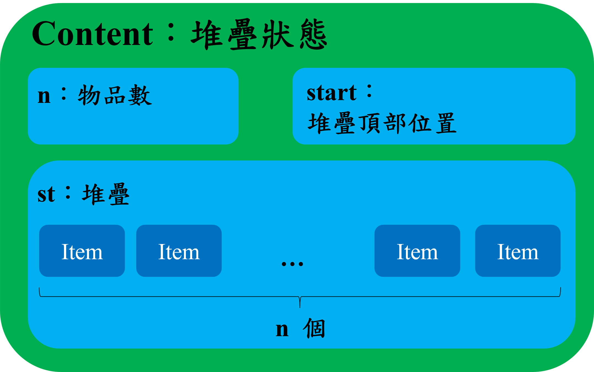
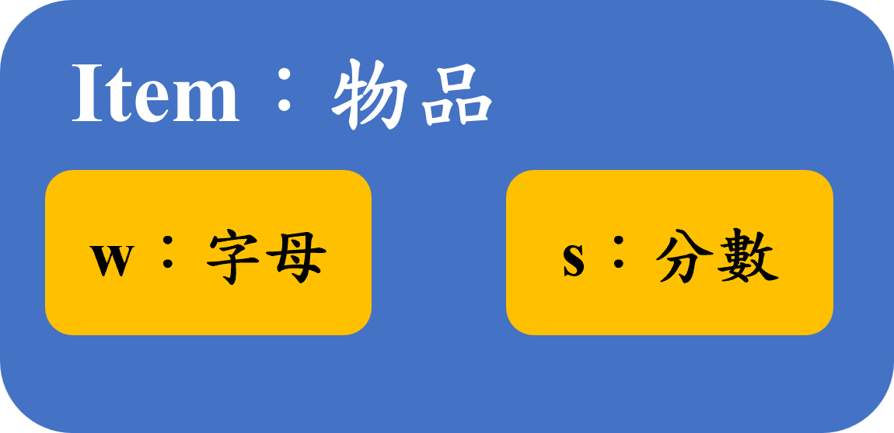
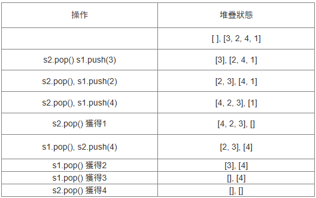
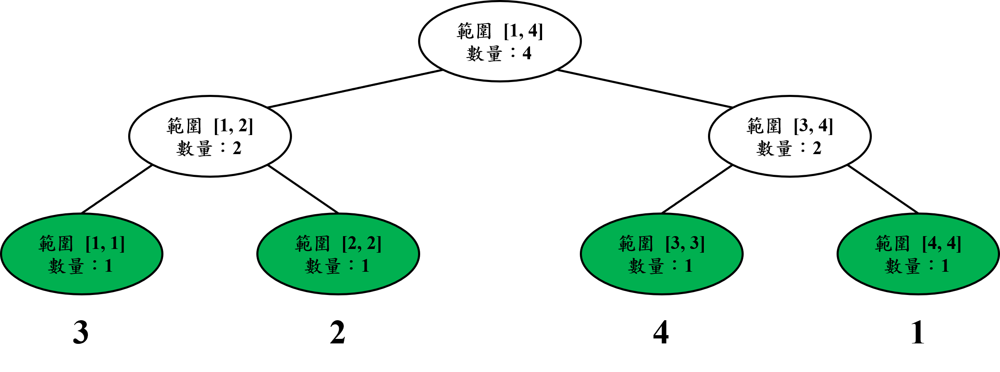

💡 此筆記為APCS 2025年11月實作題考試的題目詳解。每一題的題解都包含解題思路、C++範例程式碼。
第一題 字母配對 (ZeroJudge r626.)
題目
你有 $k$ 個堆疊，編號從 $1$ 到 $k$。每個堆疊中包含若干個物品。每個物品有兩個屬性：
1. 一個大寫英文字母代表編號。
2. 一個正整數代表分數。
你可以執行任意次操作直到無法操作為止：
操作：
1. 選擇兩個非空且不同的堆疊 $i$ 和 $j$（ $1 \le i, j \le k$ 且 $i \ne j$）。
2. 檢查堆疊 $i$ 和堆疊 $j$ 頂部的物品。
3. 如果這兩個堆疊頂部物品的字母相同，則執行消除：
• 從堆疊 $i$ 和 $j$ 中移除頂部物品。
• 獲得的分數為這兩個被移除物品的分數總和。
4. 如果字母不同，則無法執行操作。
目標是執行一系列操作，使得你最終獲得的總分數最大。
輸入 / 輸出說明
| 輸入說明 | 輸出說明 |
|---|---|
| 第一行包含一個整數 $k$ ( $2 \le k \le 6$)，表示堆疊的數量。 接下來 $k$ 行，每行描述一個堆疊的內容。第 $i$ 行描述堆疊 $i$。 每行首先是一個整數 $n_i$，表示堆疊 $i$ 中物品的數量。 接著是 $n_i$ 對 (字母, 分數) 的描述，按照從堆頂到堆底的順序給出。 • 字母 是一個大寫英文字母 (‘A’ - ‘Z’)。• 分數 是一個正整數 $s$ ( $1 \le s \le 10$ )。保證每個堆疊最多 $12$ 個物品。 30 分: $k = 3$ 70 分: 無限制 |
輸出一個正整數，代表能獲得的最大分數。 |
解題思路
這一題是 DFS 的題目，但如果要從 30 分到 100 分，就需要做記憶化搜尋。
這題因為題目同時提到提到物品 (字母、分數) 與堆疊 (很多個物品)，所以大家可以發現到堆疊內有物品，物品內有字母、分數，所以我們可以使用物件導向 (OOP) 的封裝概念，別擔心，沒有很難看懂，下面有圖。如果不使用封裝來做，會有一堆變數散落，到時候會比較難看，debug 的時候會很痛苦。
我將題目提到的物品用 struct 定義為 Item 物件，再把堆疊狀態用 struct 定義為 Content，結構如圖所示：
物品 Item 裡面放 `字母 w` 和 `分數 s`，堆疊狀態 Content 裡面包含 `物品數 n`、`堆疊 st` 和 `堆疊頂部位置 start`，其中 `堆疊 st` 用陣列存，陣列元素是 `物品 Item`。
DFS 演算法：
每個過程就是不斷嘗試。
1. 用雙層迴圈 i、j 任選兩個堆疊
2. 判斷是否頂部物品的字母相同，是就把他們用掉，start + 1
3. 呼叫 DFS 繼續遞迴，嘗試用掉這個組合後剩餘的組合
4. 遞迴回來後，判斷這個組合得到的分數 + 遞迴後得到的結果 (已經是最大值) 是否大於 Max，大於就把 Max 改成這個組合得到的分數 + 遞迴後得到的結果
經過上述四步後，回傳 Max 作為這個狀態下繼續 DFS 的最大值。
最後就會得到結果，但 k 太大就會超時。
當我們每次在做 DFS 的時候，可能存在重複的組合，而上面的方法會重複做，太浪費時間。
所以我們用一個 map, int> 存在這個狀態下，已經計算過的最大值。
vector 存 k 個堆疊各自剩餘的物品數量，代表一個狀態。
再用 vector 作為 map 的鑰匙 (key) 去存最大值，就直接用 map[這個 vector] = 最大值。
那我們每次 DFS 開始前，就先檢查在目前狀態下，是否已經有計算過的最大值，有的話就直接回傳，達到記憶化搜尋的效果。
<註解> 這題我示範的是用 map 做，並且使用 vector 作為鑰匙 (key) 去找值，好處是很直觀，但可能會導致面臨效能瓶頸，你們可以直接使用 $13^6$ 大的一維陣列 memo，並將每個狀態，即 k 個堆疊分別剩餘的數量透過 13 進位編碼，這樣會快很多喔。 假設 k = 6，這 6 個堆疊分別剩下 10、12、0、7、5、8 個物品，那你可以用 $10 \times 13^0 + 12 \times 13^1 + 0 \times 13^2 + 7 \times 13^3 + 5 \times 13^4 + 8 \times 13^5$ 表示這個狀態，把得出的答案當作索引存入最大值，即 memo[得出的答案] = 最大值，這樣會快很多。


<註解> 這題我示範的是用 map 做，並且使用 vector 作為鑰匙 (key) 去找值，好處是很直觀，但可能會導致面臨效能瓶頸，你們可以直接使用 $13^6$ 大的一維陣列 memo，並將每個狀態，即 k 個堆疊分別剩餘的數量透過 13 進位編碼，這樣會快很多喔。 假設 k = 6，這 6 個堆疊分別剩下 10、12、0、7、5、8 個物品，那你可以用 $10 \times 13^0 + 12 \times 13^1 + 0 \times 13^2 + 7 \times 13^3 + 5 \times 13^4 + 8 \times 13^5$ 表示這個狀態，把得出的答案當作索引存入最大值，即 memo[得出的答案] = 最大值，這樣會快很多。
範例程式碼
1 |
|
運行結果
AC (31ms, 3.3MB)
第二題 列印工廠 (ZeroJudge r627.)
題目
你擁有一台印刷機，需要處理 $n$ 個印刷任務。每個印刷任務 $i$ 都有三個相關的參數：
1. 開始時間 (Start Time, $s_i$): 任務 $i$ 可以在 $s_i$ 或之後開始印刷。
2. 截止時間 (Deadline, $d_i$): 任務 $i$ 必須在 $d_i$ 或之前完成印刷。
3. 所需時間 (Processing Time, $t_i$): 任務 $i$ 需要 $t_i$ 秒的連續時間來完成印刷。
印刷機在某一秒完成一個印刷品後，可以在下一秒開始時立即開始列印下一個印刷品。
我們希望排定這 $n$ 個印刷任務的執行順序，使得所有任務都能在其截止時間內完成。然而若是讓印刷機空閒時間不足會減損印刷機的壽命，為了維護印刷機的壽命，我們希望最大化印刷機在能夠執行全部任務的前提下，任兩個任務的間隔時間最大值。
任兩個任務的間隔時間定義為：在完成前一個印刷任務與開始下一個印刷任務之間，印刷機閒置的時間長度。
你的任務是找出一個有效的任務排程順序，使得所有任務都能在截止時間內完成，並且印刷機在整個排程中獲得的總休息時間最大。
輸入 / 輸出說明
| 輸入說明 | 輸出說明 |
|---|---|
| 第一行包含一個整數 $n$（ $2 \le n \le 8$ ），表示印刷任務的總數量。 接下來 $n$ 行，每行包含三個非負整數 $s_i, d_i, t_i$（ $0 \le s_i < d_i \le 1000$ , $1 \le t_i \le d_i - s_i$ ），分別表示第 $i$ 個任務的開始時間、截止時間和所需時間。 30 分: $n \le 3$ 70 分: 無限制 |
如果存在一個有效的排程順序，使得所有任務都能在截止時間內完成，則輸出最大可能的總休息時間。保證測試資料一定可以存在一個排程方式完成所有任務。 |
解題思路
這一題是二分搜 + DFS 的題目。
題目要求找最大可能的總休息時間，其實是在要我們求出任兩個任務之間最短的間隔時間的最大值 (ans)。
那這種題目很明顯是需要用二分搜才不會超時，題目說 $0 \le s_i < d_i \le 1000$，所以我就把 left 設為 0、right 設為 1000，去搜尋出 ans 最大值。
二分搜會需要一個條件決定接下來往大還是往小搜尋，而這個條件我們可以使用 DFS 去找在間隔時間 ans 下，是否能完成所有任務。
DFS 演算法：
1. 如果任務已經做完了就回傳 1，代表可以
2. 透過 for 迴圈遍歷還沒做，且截止之前可以做完的任務
now 代表可以開始印刷的時間。
used[i] 確認是否做過了。
max(s[i], now)：
1. 如果 s[i] >= now 代表要等一段時間到 s[i] 才能開始，所以做完的時間是 s[i] + t[i]
2. 如果 s[i] < now 代表可以直接開始做，所以做完的時間是 now + t[i]
max(s[i], now) + t[i] <= d 就代表截止之前可以做完的任務
3. 先做完這個任務，然後呼叫 DFS 繼續遞迴，嘗試剩餘的組合是否可以完成，可以就直接回傳 1
4. 不能做完就先不做這個任務，重新回到第二步找下一個可以先做的任務
最後記得 DFS 演算法結束後，無論在間隔時間 ans 下，是否能完成所有任務，都要把 used 陣列重置。
最後得到的 ans 就是答案。
範例程式碼
1 |
|
運行結果
AC (1ms, 336KB)
第三題 翻來覆去 (ZeroJudge r628.)
題目
給定一個長度為 $n$ 的排列（Permutation）$P=(p_1, p_2, ..., p_n)$，包含從 $1$ 到 $n$ 的所有整數。一開始，所有元素都按照它們在 $P$ 中的順序，從 $p_n$ 到 $p_1$ 依次被壓入 Stack $S_2$ 中（即 $p_n$ 在底，$p_1$ 在頂）。
目標是要透過這兩個 stack 的 push 和 pop 操作來將這個排列做由小到大排序，並且輸出最少需要多少 pop 操作。
以範例測資2 為例，目前的兩個 stack 為 [], [4, 2, 3, 1]
總共花費 8 次 pop 操作。

輸入 / 輸出說明
| 輸入說明 | 輸出說明 |
|---|---|
| 第一行輸入一個正整數 $n$ ( $1 \le n \le 10^5$ )，接下來一行為 $1$ 到 $n$ 的一個排列。 30 分: $n \le 100$ 70 分: 無限制 |
輸出需要多少 pop 操作才能將這個排列由小到大排序好。 |
解題思路
這題我看解題報告都寫 BIT，所以我來寫一下分而治之的方法，這題我用線段樹的方法做一次。
這一題是在問兩個 stack 互相 pop 與 push 後排序，輸出最少需要多少次 pop 操作。觀察一下可以發現其實 pop 次數就是算目前位置的索引到目標數字的索引間隔多少。
線段樹的建立如下圖，以範例 2 為例：
我們稱根節點 (root)，就是最上面那個節點，他的範圍是 [1, n]，這裡是 [1, 4]，他的數量就是`左子節點 [1, 2] 的數量 2` + `右子節點 [3, 4] 的數量 2` = 4，自己不算 1 個數字喔，因為它只是存範圍內有幾個數字 (葉節點)，每一個內部節點 (撇除根節點跟葉節點的節點) 也都是如此計算數量。
綠色的地方稱葉節點 (leaf)，它的特點是下面沒有任何節點，它的數量一定是 1，就他自己一個數字。
建立這個線段樹的方式就是 build 函式，主要就是用遞迴的方式從上而下建立。大家要注意因為我是把樹建立在陣列上，所以我 2 * node 代表是左子節點 (可自行驗算)、2 * node + 1 代表是右子節點 (可自行驗算)。
主程式輸出每個數字的時候，都會去找目前位置 now 與目標數字 target 的位置，把他當作一個區間 [now, target] 傳入 move 函式當 [left, right]，接著我們就看 [left, right] 是否把 每個節點的範圍 [start, end] 包住，不是的話繼續地回到完全包住，包住後就可以回傳數值，代表 [left, right] 的某一個子區間得到的數量。最後得到的數字加到 t 內，代表 pop 總數。
找到一個數字後，那個數字所在的位置就該清空，用 update 函式從上而下，把有關 target 的所有節點都減少 1。
最後輸出的 t 就是答案。
<註解> 這方法比 BIT 慢，但是只需要具備結合律的特性就可以使用，即 $(a \times b) \time c = a \times (b \times c)$，所以除了區間加法，線段樹還能處理區間最大值 (Max)、最小值 (Min)等等問題。

建立這個線段樹的方式就是 build 函式，主要就是用遞迴的方式從上而下建立。大家要注意因為我是把樹建立在陣列上，所以我 2 * node 代表是左子節點 (可自行驗算)、2 * node + 1 代表是右子節點 (可自行驗算)。
主程式輸出每個數字的時候，都會去找目前位置 now 與目標數字 target 的位置，把他當作一個區間 [now, target] 傳入 move 函式當 [left, right]，接著我們就看 [left, right] 是否把 每個節點的範圍 [start, end] 包住，不是的話繼續地回到完全包住，包住後就可以回傳數值，代表 [left, right] 的某一個子區間得到的數量。最後得到的數字加到 t 內，代表 pop 總數。
找到一個數字後，那個數字所在的位置就該清空，用 update 函式從上而下，把有關 target 的所有節點都減少 1。
最後輸出的 t 就是答案。
<註解> 這方法比 BIT 慢，但是只需要具備結合律的特性就可以使用，即 $(a \times b) \time c = a \times (b \times c)$，所以除了區間加法，線段樹還能處理區間最大值 (Max)、最小值 (Min)等等問題。
範例程式碼
1 |
|
運行結果
AC (20ms, 2.1MB)
查看更多資訊請至：https://www.tseng-school.com/